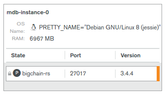

Configure MongoDB Cloud Manager for Monitoring¶
This document details the steps required to configure MongoDB Cloud Manager to enable monitoring of data in a MongoDB Replica Set.
Configure MongoDB Cloud Manager for Monitoring Step by Step¶
Once the Monitoring Agent is up and running, open MongoDB Cloud Manager.
Click
LoginunderMongoDB Cloud Managerand log in to the Cloud Manager.Select the group from the dropdown box on the page.
Go to Settings and add a
Preferred Hostnamesentry as a regexp based on themdb-instance-nameof the nodes in your cluster. It may take up to 5 mins till this setting takes effect. You may refresh the browser window and verify whether the changes have been saved or not.For example, for the nodes in a cluster that are named
mdb-instance-0,mdb-instance-1and so on, a regex like^mdb-instance-[0-9]{1,2}$is recommended.Next, click the
Deploymenttab, and then theManage Existingbutton.On the
Import your deployment for monitoringpage, enter the hostname to be the same as the one set formdb-instance-namein the global ConfigMap for a node. For example, if themdb-instance-nameis set tomdb-instance-0, entermdb-instance-0as the value in this field.Enter the port number as
27017, with no authentication.If you have authentication enabled, select the option to enable authentication and specify the authentication mechanism as per your deployment. The default BigchainDB Kubernetes deployment template currently supports
X.509 Client Certificateas the authentication mechanism.If you have TLS enabled, select the option to enable TLS/SSL for MongoDB connections, and click
Continue. This should already be selected for you in case you selectedX.509 Client Certificateabove.Wait a minute or two for the deployment to be found and then click the
Continuebutton again.Verify that you see your process on the Cloud Manager UI. It should look something like this:
Click
Continue.Verify on the UI that data is being sent by the monitoring agent to the Cloud Manager. It may take upto 5 minutes for data to appear on the UI.